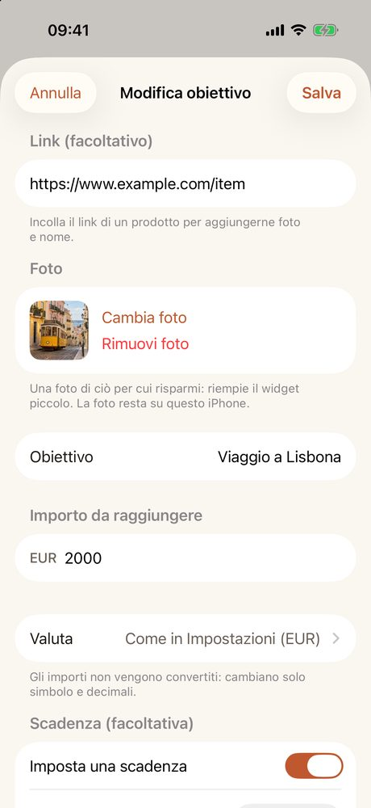
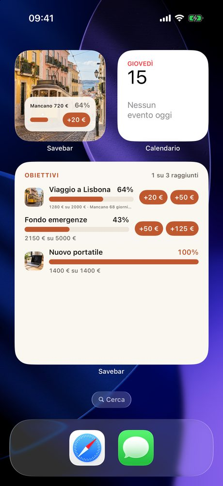

Come mettere un obiettivo di risparmio nella schermata Home dell'iPhone
Risparmiare per qualcosa è più facile quando lo vedi. Un widget mette la barra — quanto hai risparmiato e quanto manca — dove guardi molte volte al giorno, e ti fa aggiungere soldi con un tocco.
Ecco come configurarlo con Savebar. Un obiettivo e il widget piccolo sono gratis.
1. Crea un obiettivo
Apri Savebar e tocca +.
Inserisci un nome e un Importo da raggiungere.
Facoltativo: attiva “Imposta una scadenza” per vedere i giorni rimasti e quanto risparmiare al giorno.
Facoltativo: incolla il link di un prodotto in “Link”. Foto e nome vengono presi dalla pagina.
2. Scegli l'importo per il pulsante del widget
In “Importi nel widget”, inserisci l'importo che di solito metti da parte. Il pulsante del widget lo aggiunge con un tocco, senza aprire l'app.

3. Metti il widget nella schermata Home
Tieni premuta un'area vuota della schermata Home finché le app non iniziano a tremolare.
Tocca Modifica (o +) nell'angolo in alto, poi cerca “Savebar”.
Scegli la dimensione Piccola e tocca Aggiungi widget.
Ogni volta che metti da parte dei soldi, tocca il pulsante dell'importo nel widget. La barra e la percentuale avanzano subito lì.

Il widget più grande di questa immagine, con più obiettivi, fa parte di Savebar Pro.
Vuoi di più?
Savebar Pro è un acquisto una tantum, non un abbonamento:
Obiettivi illimitati
Widget medio e grande con più obiettivi, e fino a due pulsanti degli importi per obiettivo
Widget della schermata di blocco
Un'app per Apple Watch con gli stessi pulsanti degli importi
Domande
Si collega alla mia banca?No. Gli importi li aggiungi tu, quindi niente login e niente da collegare.
Quanti obiettivi posso creare gratis?Uno, con il widget piccolo della schermata Home. Savebar Pro, un acquisto una tantum, offre obiettivi illimitati, widget medio e grande che mostrano più obiettivi, widget della schermata di blocco e un'app per Apple Watch.
Posso aggiungere un importo diverso da quello del pulsante?Sì. Apri l'obiettivo nell'app e tocca “+ Aggiungi” per inserire qualsiasi importo.
Come scelgo quale obiettivo mostra il widget?Tieni premuto il widget, tocca “Modifica widget” e scegli l'obiettivo.